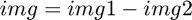
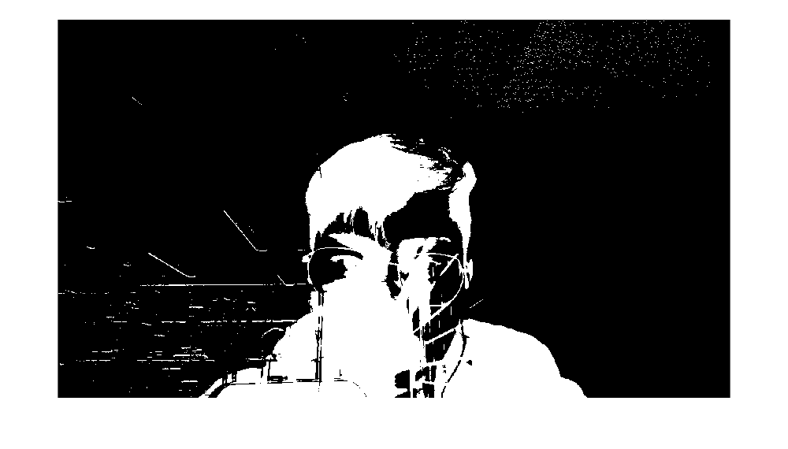

Contents
Load Image
img1 = imread('Image1.jpg'); img2 = imread('Image2.jpg');
Convert img to Grey
imgGrey1 = rgb2gray(img1); imgGrey2 = rgb2gray(img2);
Substract img
We here make a difference of two image 
imgDiff = abs(imgGrey1 - imgGrey2); % Find the max difference % maxDiff = max(max(imgDiff)); % [mRow, mCol] = find(imgDiff == maxDiff); % [m,n] = size(imgDiff); % imshow(imgDiff); % hold on; % plot(mRow, mCol, 'r*');
Enlarge contrast
newImg = increaseContrast(5,5,imgDiff); imshow(newImg); % hold on; % plot(mRow, mCol, 'r*'); % hold off;
警告: 图像太大，无法在屏幕上显示；将以 67% 显示
Fill in Regions
imgFilled = bwareaopen(newImg, 150); % Overlay onto Original Image % imgBoth = imoverlay(img1, imgFilled, [1,0,0]); % imtool(imgBoth);
Only Care About Things Large Than 80
imageStats = regionprops(imgFilled, 'MajorAxisLength'); imgLengths = [imageStats.MajorAxisLength]; idx = imgLengths > 100; imageStatsFinal = imageStats(idx); %disp(imageStatsFinal)
Determine if Change is Significant
if isempty(imageStatsFinal) disp('0'); else disp('1'); imgBoth = imoverlay(img2, findObject(imgFilled), [1,0,0]); imtool(imgBoth); end function fu = findObject(img)
find the derivative
m = size(img,1);
n = size(img,2);
row = sum(img);
col = sum(img, 2);
dev_row = 1/n * (row(2:end) - row(1:end-1));
dev_col = 1/m * (col(2:end) - col(1:end-1));
find the max and second max
[max, secondmax] = findPeak(dev_row);
left = find(dev_row == max)
right = find(dev_row == secondmax)
if left > right
temp = left;
left = right;
right = temp;
end
[max, secondmax] = findPeak(dev_col);
up = find(dev_col == secondmax)
down = find(dev_col == max)
if up > down
temp = down;
down = up;
up = temp;
end
left =
756
right =
1159
up =
1031
down =
756
Return Value
fu = zeros(m, n);
fu(up:down, left) = ones(down - up +1, 1);
fu(up:down, right) = ones(down - up + 1, 1);
fu(up, left:right) = ones(1, right - left + 1);
fu(down, left:right) = ones(1, right - left + 1);
end function [maxpeak, secMaxPeak] = findPeak(x) y = findpeaks(x); [a,i] = sort(y); maxpeak = a(end); secMaxPeak = a(end - 1); end
1